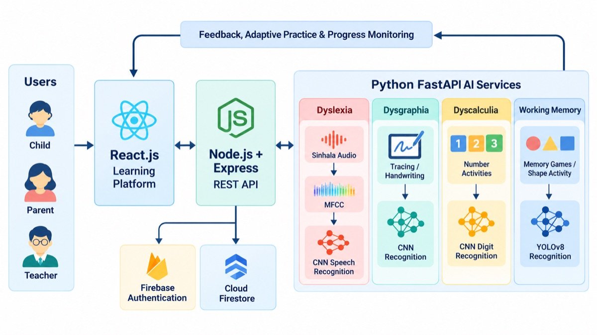
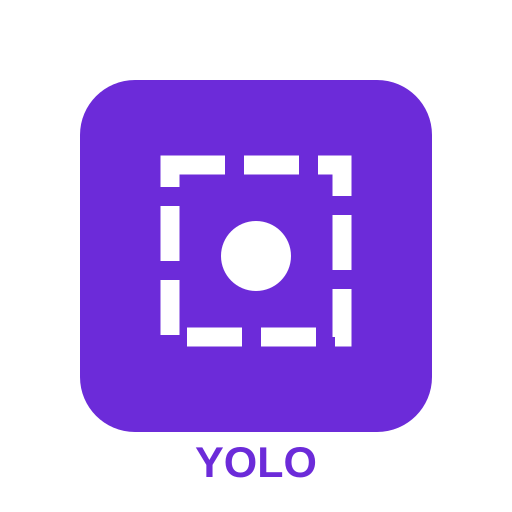

Smart Learn: An Adaptive Mobile Platform for Neurodevelopmental
Learning Disorders is a research-based digital learning platform for
Sinhala-speaking children aged 6–8 years with specific learning
difficulties.
Smart Learn combines four AI-assisted learning components for Sinhala-speaking children aged 6–8 years.
Project Overview
Smart Learn is an AI-assisted, adaptive learning platform designed to support Sinhala-speaking children aged 6–8 years who experience difficulties in reading, handwriting, numerical learning, and working memory.
The platform integrates Dyslexia, Dysgraphia, Dyscalculia, and Working Memory components. Each component provides interactive, game-based activities, personalised feedback, and performance monitoring to support learning experiences. Sinhala-language accessibility, artificial intelligence, machine learning, and adaptive learning techniques help create an engaging digital environment for children, parents, teachers, and educational professionals.
Research Problem
Sinhala-medium children aged 6–8 years who experience difficulties in reading (dyslexia), handwriting (dysgraphia), mathematics (dyscalculia), and working memory have limited access to suitable digital learning support. These difficulties can affect children’s ability to develop essential academic skills during their early school years, and some children may require support in more than one learning area. Most existing digital applications focus on individual learning difficulties, screening, or assessment, with limited Sinhala-language support, personalised practice, and progress monitoring. Furthermore, many available applications are developed for English or other widely supported languages, making them less suitable for Sinhala-speaking children. The main research problem is the limited availability of an integrated, age-appropriate, Sinhala-focused learning platform that provides continuous and adaptive support for all four learning areas within a single environment. This creates a need for a system that combines targeted learning activities, interactive feedback, and performance monitoring to support children’s different learning needs.
Limited Sinhala-language support
Many digital learning applications are designed for English or other widely supported languages, making them less suitable for young Sinhala-speaking learners.
Fragmented learning support
Reading, handwriting, mathematics, and memory activities are often provided through separate applications instead of a unified learning environment.
Limited personalisation
Generalised activities may not adapt sufficiently to a child’s learning level, performance patterns, and areas requiring additional practice.
Insufficient progress monitoring
Some tools do not provide detailed records of accuracy, response time, attempts, errors, and learning progress for parents and educational professionals.
Detailed literature survey
Digital, game-based, and AI-assisted learning support
Recent studies have explored digital technologies, game-based learning, and artificial intelligence to support children with neurodevelopmental learning difficulties, including dyslexia, dysgraphia, dyscalculia, and working-memory difficulties. These approaches enable children to practise learning skills through interactive activities while their performance is monitored.
For dyslexia, DysPuzzle and Dytective introduced game-based screening for reading difficulties, while Dyseggxia and Mr Read focused on interactive reading and spelling support [1]–[4]. Dysgraphia research has investigated digital handwriting assessment, deep-learning approaches to writing patterns, and adaptive handwriting games for personalised practice [5], [6]. Although these approaches demonstrate technology-supported handwriting development, some focus more on assessment than continued intervention.
For dyscalculia, research highlights the importance of developing number understanding, while Sri Lankan work has introduced mobile approaches for identifying children at risk of mathematical learning difficulties [7], [8]. Working-memory research has explored cognitive training and gamified activities for sequential recall, visual memory, and retention; however, broader academic transfer from trained memory tasks remains an important consideration [9], [10]. Learning analytics also shows how accuracy, response time, and completed activities can inform educational decisions [11].
Across these areas, many solutions focus on a single learning difficulty, screening, or assessment. Limited attention is given to Sinhala-medium children and an integrated platform that combines game-based activities, recognition-based feedback, adaptive practice, and progress monitoring for all four learning areas. These limitations motivate Smart Learn.
IEEE References
C. Rello, M. Ballesteros, and J. P. Bigham, “DysPuzzle: A Mobile Game to Detect Dyslexia in Pre-Reading Children,” Proceedings of the ACM Conference on Human Factors in Computing Systems, 2015.
C. Rello, M. Ballesteros, and J. P. Bigham, “Dytective: Toward Detecting Dyslexia Across Languages Using a Web-Based Game,” Proceedings of the Web for All Conference, 2016.
C. Rello, R. Baeza-Yates, and J. P. Bigham, “Dyseggxia: A Game to Improve Spelling Skills in Children with Dyslexia,” Proceedings of the SIGCHI Conference on Human Factors in Computing Systems, 2013.
N. F. M. Zainuddin and M. Z. M. Yusof, “Mr Read: A Mobile Application to Assist Dyslexic Children in Reading,” International Journal of Multimedia and Ubiquitous Engineering, 2016.
D. T. Wan, H. Malhi, and K. Chien, “A Deep Learning Approach to Dysgraphia Detection Using Handwriting Dynamics,” IEEE Access, vol. 8, 2020.
P. Coupé et al., “Towards Personalized Dysgraphia Remediation Using Tablet-Based Adaptive Handwriting Games,” Sensors, vol. 22, no. 5, art. 1943, 2022.
B. Butterworth, L. Varma, and D. Laurillard, “Dyscalculia: From Brain to Education,” Science, vol. 332, no. 6033, pp. 1049–1053, 2011.
C. Hewapathirana et al., “A Mobile-Based Screening and Refinement System to Identify the Risk of Dyscalculia and Dysgraphia Learning Disabilities in Primary School Students,” 2021 10th International Conference on Information and Automation for Sustainability (ICIAfS), 2021.
P. Ferreira et al., “Neurodevelopmental Disorders: Assessing and Training Working Memory,” Cognitive Research: Principles and Implications, vol. 10, no. 1, 2025.
G. Sala and F. Gobet, “Cognitive Training Does Not Enhance General Cognition,” Trends in Cognitive Sciences, vol. 23, no. 1, pp. 9–20, 2019.
D. Ifenthaler and J. Y. Yau, “Utilizing Learning Analytics for Study Success,” Research and Practice in Technology Enhanced Learning, vol. 15, no. 1, 2020.
Research Gap
Dyslexia: Many existing applications focus on dyslexia screening or English-based reading activities. Sinhala-specific tools that combine letter recognition, pronunciation practice, adaptive games, and progress monitoring remain limited.
Dysgraphia: Existing systems often focus on handwriting detection or general tracing activities. Limited solutions provide Sinhala letter and word writing practice with recognition-based feedback, mirror-letter correction, and personalised support.
Dyscalculia: Many digital solutions focus on identifying mathematical difficulties or teaching general number concepts. Sinhala-based interactive activities combining number tracing, listening, recognition, and adaptive practice remain limited.
Working Memory: Existing memory-training applications often use general cognitive games with limited adaptation to individual learning needs. Sinhala-supported activities combining visual, auditory, and sequence-based memory practice with progress tracking remain limited.
Research Objectives
Interactive learning componentsDevelop educational activities for Dyslexia, Dysgraphia, Dyscalculia, and Working Memory.
AI-assisted recognitionIntegrate machine-learning models for selected speech, handwriting, digit, and shape-recognition activities.
Adaptive learningPersonalise activities and difficulty levels according to learner performance.
Performance monitoringRecord accuracy, completion time, attempts, errors, and activity progress.
Progress dashboardsProvide progress information for parents, teachers, and educational professionals.
EvaluationEvaluate technical performance and usability of the developed learning components.
Research methodology
Design Science Research approach
The Smart Learn project followed a Design Science Research (DSR) approach, focusing on the design, development, and evaluation of a web-based learning platform for Sinhala-medium children aged 6–8 years. Initially, a literature review was conducted, and feedback was collected from teachers and relevant professionals to identify learning difficulties and suitable intervention activities. Based on these findings, four game-based components were developed to support dyslexia, dysgraphia, dyscalculia, and working-memory difficulties. The system was developed using React.js for the frontend, Node.js and Express.js for backend API services, and Firebase Authentication and Cloud Firestore for user authentication and data management. The dyslexia component incorporated Sinhala reading and pronunciation activities using a CNN-based speech recognition model with Mel-Frequency Cepstral Coefficients (MFCCs) for audio processing. The dysgraphia component included SVG-based letter tracing, handwriting activities, and a CNN-based recognition model for evaluating Sinhala letters and words. The dyscalculia component provided number tracing, number listening, sorting, and mathematical games, supported by a CNN-based handwritten digit recognition model. The working-memory component included visual, auditory, and sequence-based memory games, with a YOLOv8-based object-detection model used for shape-recognition activities. Machine-learning inference was supported through Python-based services using FastAPI, while REST APIs enabled communication between the frontend, backend, and recognition services. The platform also incorporated Sinhala voice guidance, interactive feedback, rewards, adaptive practice, and progress monitoring. Finally, the developed components were evaluated through machine-learning model performance testing, functional testing, practical activities with children, and feedback from teachers and relevant professionals to assess their functionality and suitability for the intended age group.

Smart Learn system architecture and component-level AI intervention flow.
Research components
Four specialised learning modules
Dyslexia
AI-assisted Sinhala reading and pronunciation practice for children aged 6–8 years.
Activities
Initial literacy pre-assessment and activity recommendation
Sinhala letter recognition and letter–sound association
Two-letter and three-letter word reading
Pronunciation assessment and adaptive reading games
AI and monitoring
A CNN-based Sinhala speech-classification model uses MFCC features to analyse selected spoken letters and words. Sinhala audio guidance, immediate feedback, rewards, and performance-based progression support learning. Monitoring records pre-assessment outcomes, recommended level, responses, accuracy, scores, duration, sessions, trends, and practice areas.
Dysgraphia
Adaptive Sinhala handwriting intervention with voice guidance, visual feedback, and rewards.
Activities
SVG-based guided letter tracing and independent writing
Two-letter and three-letter word writing
Ruled-line writing for size, spacing, and alignment
Mirror-letter identification, correction, and drawing activities
AI and monitoring
A CNN-based handwriting-recognition model evaluates Sinhala letters and words. The platform records completed activities, correct and incorrect attempts, writing time, number of attempts, erase count, recognition confidence, and handwriting areas requiring additional practice.
Dyscalculia
AI-assisted foundational numerical learning for children with number-skill difficulties.
Activities
Number tracing and freehand digit writing
Number listening with Sinhala audio prompts
Number sorting and sequencing
Mathematical games and number-identification activities
AI and monitoring
A CNN-based handwritten digit-recognition model supports number-writing activities. Canvas input is preprocessed before evaluation, and recognition-based feedback is provided. Monitoring records completion, correct and incorrect responses, accuracy, response time, attempts, performance, and numerical areas requiring practice.
Working Memory
Adaptive visual, auditory, and sequence-based cognitive learning games.
Activities
Sequence Recall and Memory Matching
Video Story Recall
Shape-recognition activities
Adaptive memory practice with Sinhala audio guidance
AI and monitoring
Activity difficulty adapts according to individual performance. A YOLOv8-based object-detection model supports shape-recognition activities. Interactive feedback, rewards, and progress monitoring record accuracy, response time, errors, attempts, completion, and learning trends.
Technologies Used
Platform technology stack: Frontend — React.js, JavaScript, Vite, Tailwind CSS, Framer Motion; Backend — Node.js, Express.js, REST APIs, Python, FastAPI; Data and authentication — MongoDB, Cloud Firestore, Firebase Authentication; AI/ML — CNNs, YOLOv8, MFCC, speech, handwriting, digit, and shape recognition; Deployment — Vercel and Microsoft Azure; Version control — Git, GitHub, and npm.
Firebase
Node.js
React.js
MongoDB

YOLOv8
Express.js
Python
CNN Models
Expected Contribution
Smart Learn brings together four specialised learning components in an accessible Sinhala-language educational platform. It integrates AI-assisted interaction, adaptive activities, game-based practice, and performance monitoring across reading, handwriting, numerical learning, and working-memory tasks.
Evaluation: The components are evaluated through model-performance testing, functional testing, practical activities with children, and feedback from teachers and relevant professionals.
Scope note: Smart Learn is an educational support tool and does not independently provide clinical diagnosis of neurodevelopmental or learning disorders.
Project journey
Milestones
Key assessments and project deliverables.
01
16–18 March 2026
Proposal Presentation
Initial proposal presenting the scope, research problem,
objectives, and planned approach.
Allocated marks: 12%
02
11–13 May 2026
Progress Presentation 1
Progress review covering initial implementation and feedback.
Allocated marks: 15%
03
31 August–2 September 2026
Progress Presentation 2
Progress review covering refined components, testing, and
readiness.
Allocated marks: 18%
04
19–21 October 2026
Final Assessment & Viva
Final research project submission and assessment.
Allocated marks: 20% (combined Final Presentation & Viva)
05
19–21 October 2026
Research Paper
Research paper submission and publication evidence.
Allocated marks: 10%
06
11 October 2026
Project Website
Project website submission and evaluation.
Allocated marks: 2%
Project resources
Documents
Only files present in this repository have working links.